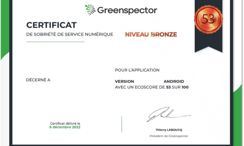

Reconnaissance
Solution reconnue pour son efficacité environnementale.
Conseil
Obtenez votre certificat de Sobriété de Service Numérique avec l'accompagnement des experts Greenspector.
Audit de sobriété, impact environnemental et performance pour vos applications mobile et web.
Expertise
Audit d'une application existante ou en refonte, accompagnement à l'amélioration, obtention du Certificat Greenspector: nos équipes vous accompagnent de bout en bout.
Contactez-nous pour échanger directement avec nos experts ou avec nos partenaires agréés.
Démarrage
L'audit de sobriété, d'impact environnemental et de performance avec Greenspector Studio est un excellent point de départ pour structurer votre démarche.
Décrivez le parcours utilisateur, nous nous occupons du reste: automatisation, exécution des tests, analyse des résultats et rapport de recommandations.
Vous disposez ensuite d'un plan d'action concret pour réduire les impacts de votre application.
Certificat
Le certificat est délivré aux applications mobiles et sites web qui allient sobriété énergétique, sobriété des données et performance.
Les mesures sont regroupées, analysées puis traduites en scores. Un écoscore de 0 à 100 synthétise l'ensemble, avec trois niveaux de certificat: Bronze (50-69), Argent (70-89), Or (90-100).
Un badge affichable sur votre site ou dans votre application est associé à une page d'authentification hébergée par nos soins.

Ils en parlent
Se faire accompagner par un acteur comme Greenspector, c'est s'assurer de ne pas faire fausse route ou de prendre des raccourcis.
Standards
Solution reconnue pour son efficacité environnementale.
Une expertise fondée sur la recherche et les retours terrain.
ACV (ISO 14040), SCI Green Software Foundation, RCP ADEME et références associées.
Références
Pour allier responsabilité environnementale, satisfaction utilisateur et performance applicative.